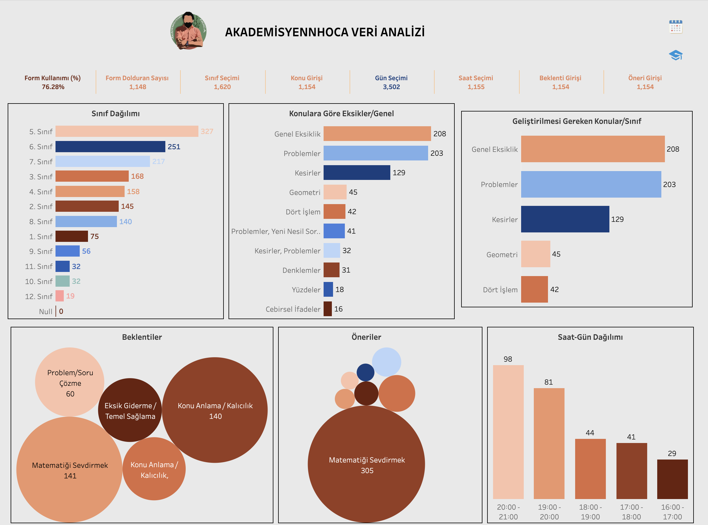

9. Proje – AkademisyennHoca Eğitim Verisi Analizi (Tableau)
🎯 Amaç
Gerçek öğrenci ve veli verileriyle matematik öğreniminde ihtiyaçları, beklentileri ve önerileri analiz ederek öğretim planlamasını desteklemek.
📥 Veri Kaynağı
Google Forms (1.148 katılımcı)
📊 Kullanılan Araç
Tableau Public
📖 Açıklama
- Farklı sınıf seviyelerinden öğrenci ve velilerden toplanan geri bildirimler analiz edildi.
- Veriler açık uçlu ve çoktan seçmeli sorularla toplanıp Google Sheets’te temizlendi, Tableau’da görselleştirildi.
- Eksiklikler: Problemler, Kesirler, Genel Anlamama
- Beklentiler: Matematiği sevdirmek, kalıcı öğrenme, problem çözme becerisi
- Öneriler: Sade konu anlatımı, eğlenceli öğretim, temel konulara dönüş
- En uygun saat aralığı: 19:00–21:00
Bu analiz, eğitimcilerin bireysel ve toplu öğrenme planlaması yapmasına destek olur.
👩💻 Teknik Analiz
- Google Sheets’te veri temizliği → Tableau’ya aktarım
- COUNT, GROUP BY, CASE WHEN ile veri kategorize edildi
- Görseller: Bar Chart, Bubble Chart, Zaman Analizi
- Dashboard etkileşimli filtrelerle kullanıcıya esneklik sağlar
Kullanılan Araçlar:
Tableau